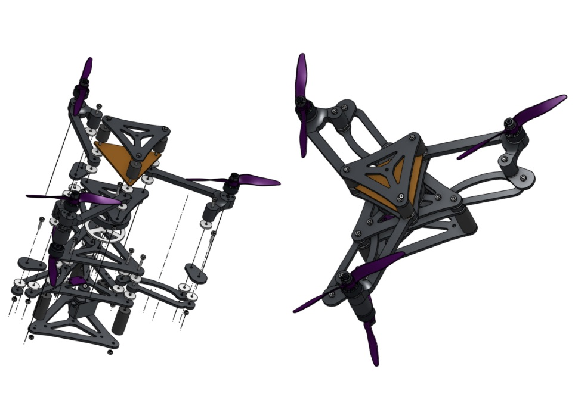

Transforming Tricopter Drone
The very first tricoptre built to shape shift with an expansion and contraction mechanism that for adaptive reconfiguration optimizing combinations of resilience and agillity.

Background/Origin
As a part of MIT's MISTI France Program, I conducted an internship with the Systèmes Bio-Inspiré Robotics Laboratory in Marseille, France. There, I under the guidance of Professor Stéphane Viollet, I designed, and fabricated my tricopter drone from scratch. From handrawn paper models and precise CAD with integrated electroncis to a custom PCB board tailored to the rotational mechanism of the drone, I was able to get the carbon-fiber-teflon hybrid drone into the air by the end of the my 2 month stay.

Engineering the Drone
Starting out with wooden, prototypes, I quickly transitioned to 3D printed carbon fiber parts. By employing a planar design for the drone ,suitable for rotational mechanisms, I was able to streamline the fabrication process. I implemented a servo motor at the center of the drone to control its rotational state, and teflon spacers as lubrication between frictional surfaces. Next, I used EaglePCB to design my own PCB board, and tested various motors from IQ to T-motor models. I measured the thrust and drag with the RC Benchmark Thrust Stand from Tyto Robotics, which allowed me to ensure the drone will takeoff. For controls, I built a simple command loop based on DRhem VTOL. The controller begins by passing in raw IMU gyro and accelerometer values for each axis into the Madgwick filter, which then calculates a prediction step and gradient-descent-based correction step to arrive at an attitude estimation; these values are converted into angles. Below is a list of materials I used for the final product:
- Microcontroller: Teensy 4.0
- Motors: F1507 Brushless DC T-motor
- ESCs: LIBEE 20A Favourite
- Radio: Spektrum Receiver & Transmitter
- Materials: Bambu Lab PAHT-CF, Teflon

Final Notes / Next Steps
After completing this project, I wrote a research paper that will be submitted to the journal "Drones" early next year. I have attached it below. I calculated the Equations of Motion using Lagrangian Mechanics to be able to predict the drones behavior with the coupling of the expansion/contraction mechanism. Given the physical limitations of all drones alike, I wanted to invent a device that could manipulate objects like us, controled by us-- enter my Aerial Bionic Hand vision.